一樣米養百樣人，每個人都有自己的小癖好。您是否能接受NTR(戴綠帽)呢？（單選）(1/11)
我最愛NTR了，有夠刺激，爽
沒到很愛但能接受
無所謂，沒什麼意見
不太能接受
完全不行，我只能純愛，別虐我
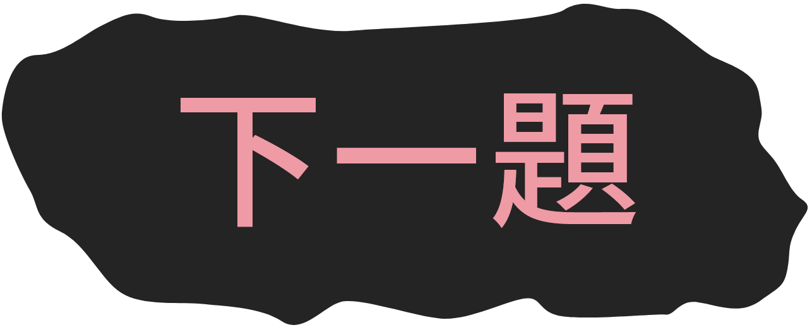
在玩一款成人向RPG的時候，您覺得遊戲性與色色內容的理想分配是？（單選）(2/11)
我不需要成人要素，遊戲夠好玩才是重點
遊戲性優先，成人要素只是輔助
一半一半，兼顧遊玩與實用度才是理想分配
成人要素優先，遊戲性其次
好不好玩不重要，我只想拿來用
<<那個江湖>>是一款武俠風格成人RPG，各式內容豐富多趣，您最希望體驗到什麼樣的遊戲內容？（可複選）(3/11)
精彩的主線劇情發展 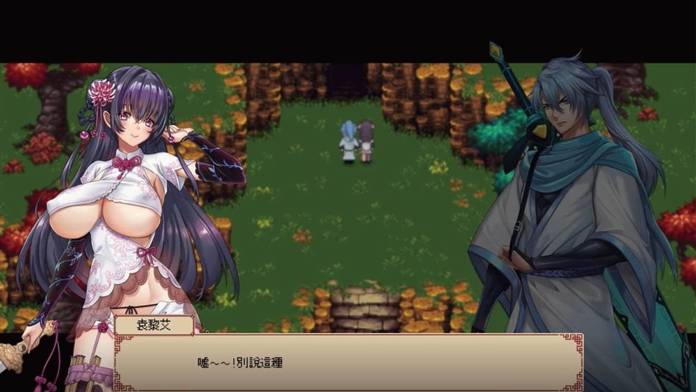
拜師、角色專屬事件、支線故事等豐富的探索要素 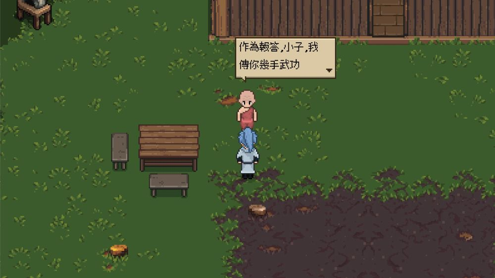
多樣的蒐集品及成就、稱號、圖鑑之類的隱藏要素 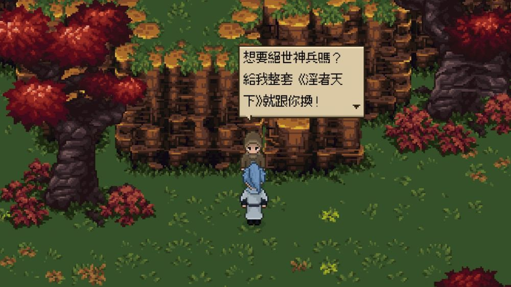
有趣的戰鬥系統及刺激的挑戰關卡 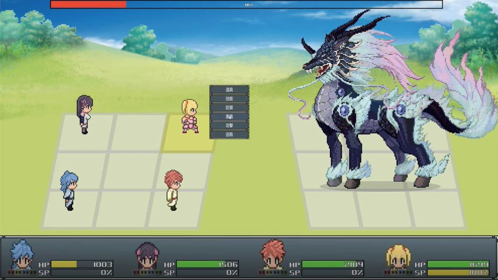
精心製作的精美遊戲無碼HCG 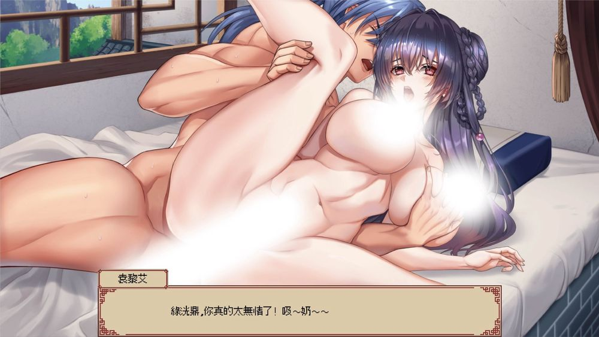
極其煽情的H劇情及文本 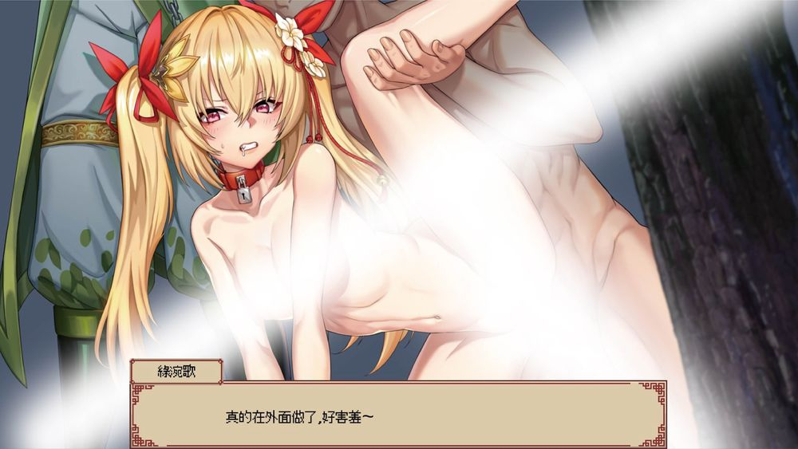
在玩RPG的時候，您喜歡怎樣的遊戲系統跟戰鬥機制？（單選）(4/11)
我最喜歡研究遊戲系統，越複雜越好，須深思熟慮才能打贏強敵
我喜歡複雜的遊戲系統，但我不希望戰鬥太難
我希望遊戲系統不要太複雜，但戰鬥可以難一點比較有挑戰性
越無腦越好，最好還可以一鍵勝利
在遊玩一款成人向RPG時，您希望劇情規模應如何？（單選）(5/11)
希望能像一般向RPG，有龐大的故事觀及劇本量支撐整個遊戲
可以"用"比較重要，劇情只要合理，不需要著墨太多
我來只是想上車，劇情什麼的，可有可無
有傳統RPG的探索性、戰鬥的策略性，以及門派、陣型系統、蒐藏物等各種豐富要素， 含有各種精心安排的激情場面，在男女價值觀保守的武俠世界，卻極盡荒淫之所能，背德感十足， 配上誠意滿滿的精緻CG，兼具遊戲性及實用度。
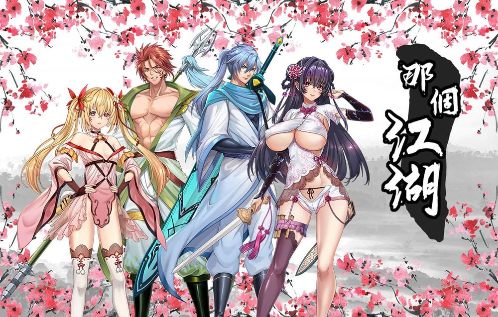
您喜歡下面哪個女角色？（單選）(6/11)
綠涴歌：本作男主角綠洸鼎的妹妹，性格高傲自居、火爆嗆辣 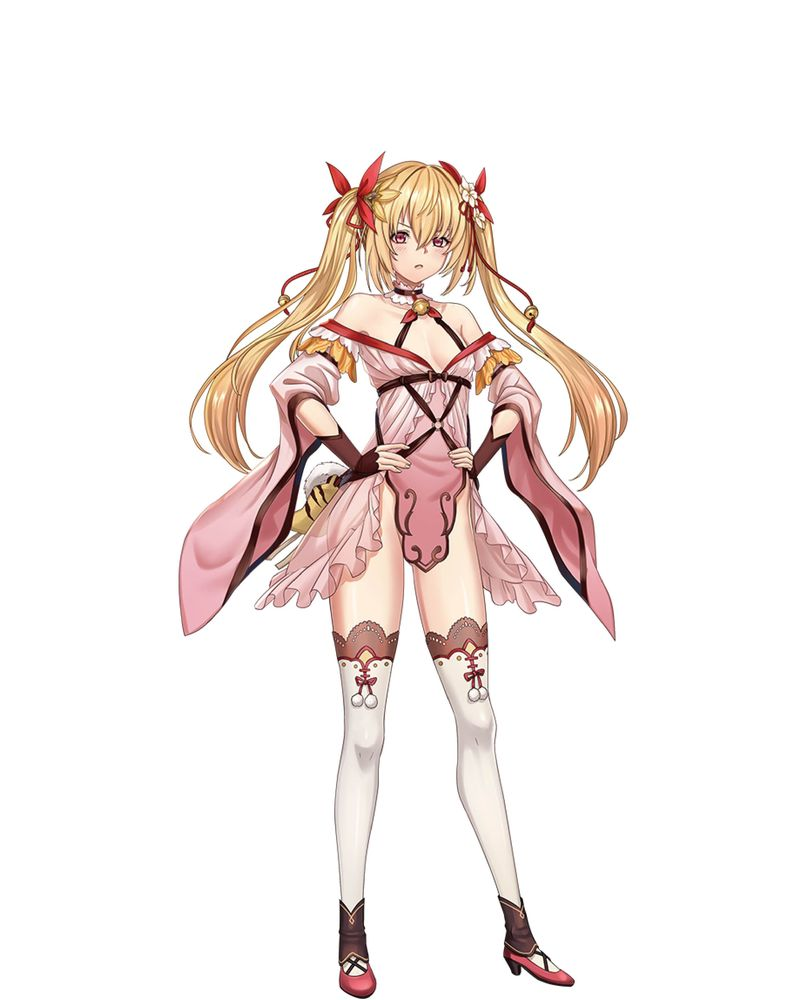
袁黎艾：王山派掌門千金，為人善良親切、活潑可人，天真聰明有禮，是大家眼中的女神 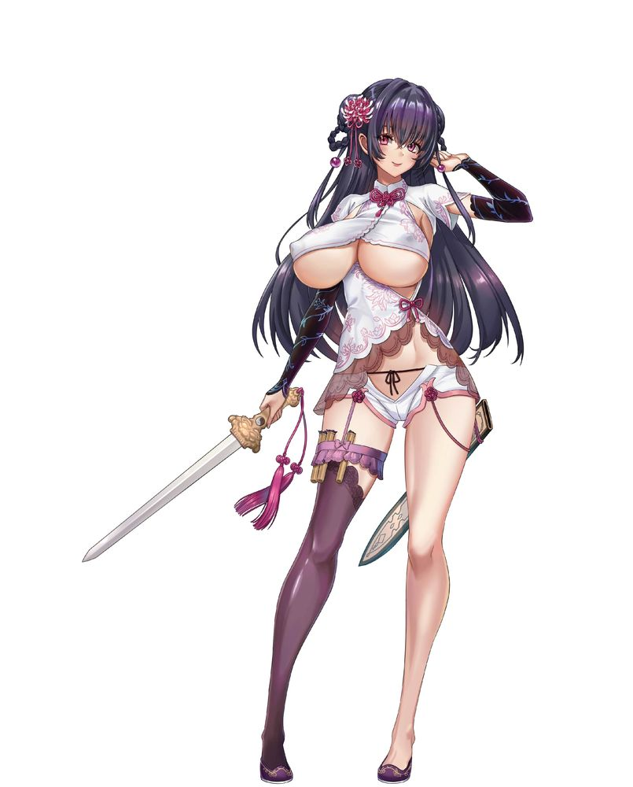
我全都要
都不是我的菜
您喜歡下面哪個男角色？(單選)(7/11)
綠洸鼎：王山派掌門關門弟子，努力型的天才，宅心仁厚、待人溫柔，為人正直、剛正不阿 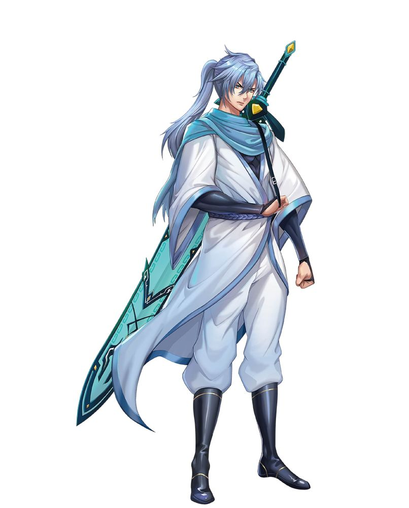
寧兲仞：性格輕率、吊兒啷噹，自我中心且態度隨便 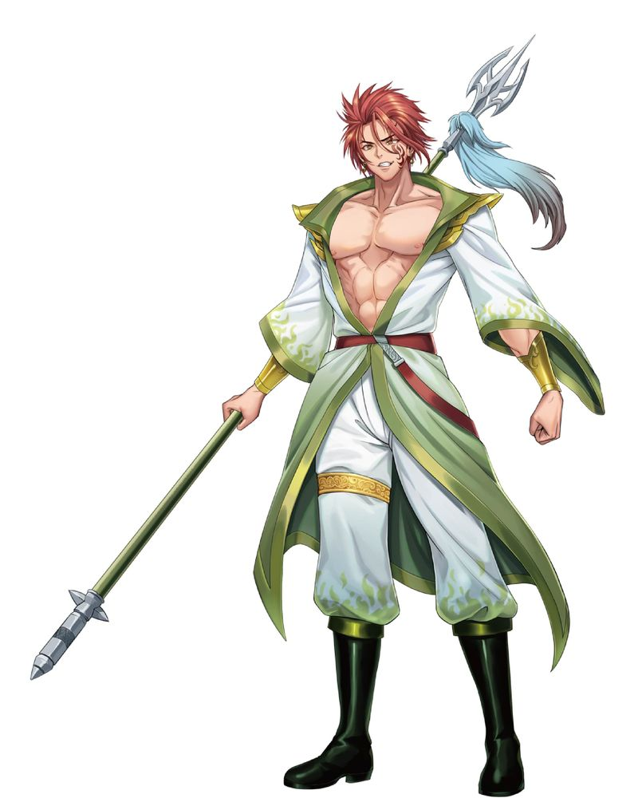
男的也好我全吃！
都不是我的菜
請問您的性別是？(單選)(8/11)
男性
女性
多元性別
請問您的年齡區間？(單選)(9/11)
18歲以下
19-24歲
25-30歲
31-40歲
41-50歲
51歲以上
歡迎留下您的 E-Mail及手機，才能在抽獎抽到您的時候正確通知喔！也能收到第一手「那個江湖」上線通知，搶到限量超早鳥優惠(10/11)
有任何建議嗎？(11/11)
歡迎提供給我們做為改進參考喔！
（此份問卷圖片為開發中畫面，實際畫面請以遊戲中為準）
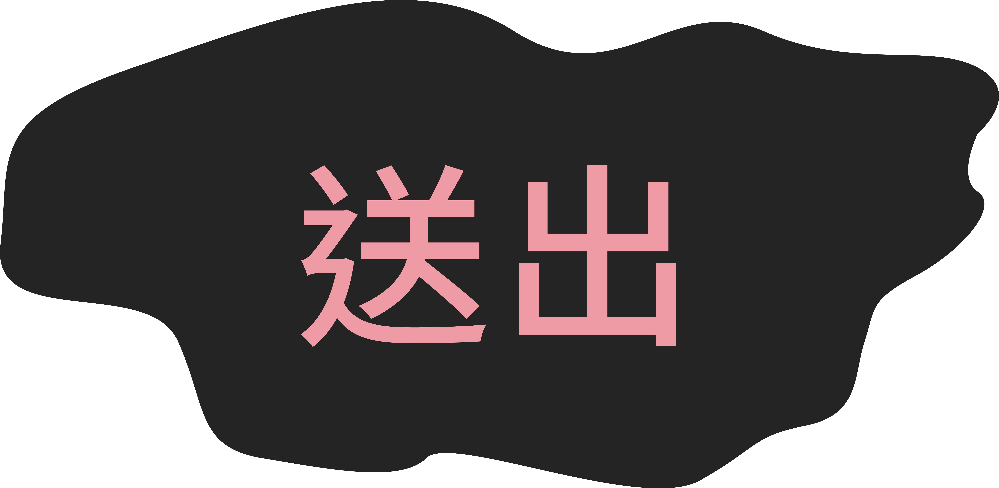